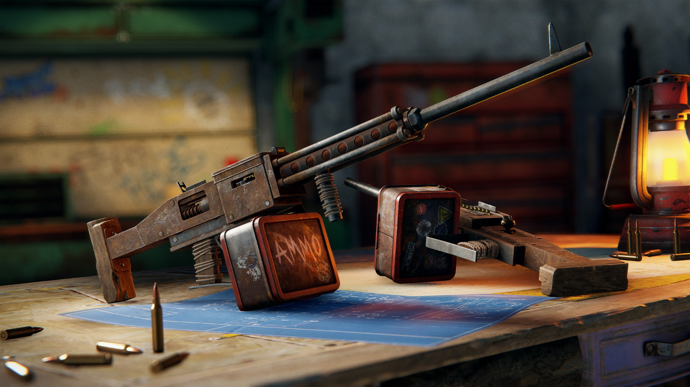

The Combat Update
The biggest gunplay update since Rust's initial release, Hapis Island is back, Handmade LMG added, and scientists now patrol the Launch site along with a huge amount of other improvements and fixes.
COMBAT CHANGES
-
Recoil
The old recoil system in rust had some issues. It was loved by some, and hated by others.
If you didn't have hundreds if not thousands of hours practicing the recoil in rust, Firing at people in the game would often feel like attempting to align two like poled magnets. Frustrating would be an understatement.
Ultimately, being good at first person shooters and having the drop on someone wasn't good enough. If the other person had thousands of hours of training their aim you stood very little chance.
This was fun for people who could spend thousands of hours training their aim, or morally bankrupt individuals who would choose to use scripts to gain an advantage. This was not fun for 99% of the population, and it's time for a change.
Instead of pattern based recoil, we now implement a gradient based aim drift and inaccuracy for automatic weapons. That is to say, the longer you hold down the trigger, the more inaccurate the weapon becomes. It still takes skill to try and keep it centered on the target, but it is not the same with each burst. We've also updated aimcone (inaccuracy of bullets relative to where you are aiming )to use a weighted system, so that roughly 20% of the shots will land in the center. This means that automatic fire at a long range effectively decreases DPS. This encourages players to use the right weapons in the right situations and to improve their tactics and burst discipline. There should be less 200m beaming going on. What this has done is compressed the skill ceiling, and we think this is a good thing.
Perfectly replicated recoil also meant that mouse scripts could be abused to put 30 rounds on target at 200m, every time.
In addition to the aforementioned recoil changes, we went through and modernized some other elements of the 'first person shooter' experience.
-
SOUNDS
The most immediately noticeable change is the sound effects of most of the guns have been updated. This might take some getting used to but the quality has improved significantly.
-
VIEW MODELS
The View Models have had their dynamic animations updated. You'll notice the walking bob is much improved, as is the sway when looking left/right/up/down. It's a small change but helps to bring things into this decade.
View Models also have a crisper punch back when firing, and they animate the main camera during reloads to emphasize the hand actions.
We've added head bob which is active when sprinting, it's a small touch but adds to the experience. You can turn this off in the options.
All of these elements combined gives the weapons in rust a much cleaner and modern feeling.
-
HIT PUNCH AND DIRECTIONAL MARKERS
We also felt that there were some issues knowing where you were taking damage from, with large splotches of blood covering most of the screen during high damage encounters.
We've changed this so that you now receive a smaller semicircle blood splat indicating the direction you took damage from, and a small amount of Screen Shake. Please note that silenced shots will not produce a damage indicator on the victims HUD.
-
HIT CROSS
We've added a visual hit indicator to accompany the sound you're all familiar with. Upon landing a successful hit onto another player or AI you'll now notice a hit marker cross briefly appearing.
-
CROSSHAIR
10 years ago in legacy rust, people would tie dental floss to the top and sides of their monitor to create a crosshair in the center. Now everyone can simply enable one on their monitor or using third party software. Because of this we decided to add a crosshair to the game natively.
The crosshair will give you a rough idea of your accuracy based on the weapon you are holding and your stance. We'll be looking at crosshair customization options in the future, as well as specific crosshairs for different weapon types (melee/throwing, etc.) The crosshair can be disabled within the options menu if you hate it and third party crosshairs are allowed to be used.
As always, this is a work in progress, We're going to review all the feedback and continue to make adjustments until we get this right. Everything is subject to change.
HANDMADE LMG
-
The handmade light machine gun is a new tier 3 craftable weapon, with high damage, a high rate of fire, and low accuracy but great at suppressing fire.
Crafting cost: 30 HQM, 1 rifle body, 2 metal springs and 3 gears.
